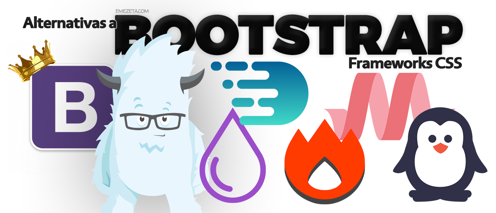

Bootstrap
Es el framework CSS más popular, en el año 2020, usado en infinidad de proyectos de todo tipo. Cuando apareció creó una tendencia de frameworks basados en componentes, capaces de implementar temas de diseño completos y complejos, aportando mucha sencillez y agilidad al desarrollo CSS y dotando a los programadores de herramientas para crear diseños consistentes con poco esfuerzo. Durante sus años de existencia ha evolucionado mucho, incorporando novedades del estándar de CSS con rapidez y eliminando dependencias pesadas como jQuery.
Materialize CSS
Materialize es un framework CSS que implementa el tema de diseño "Material Design". Ofrece componetes material listos para usar, que se pueden integrar de una manera cómoda en los sitios web, consiguiendo un diseño guiado por las directrices de aplicaciones y sitios de Google. Crea diseños consistentes que son fáciles de entender y familiares para los usuarios en general. Tiene muchos componentes que también implementan comportamientos dinámicos con Javascript y recientemente se actualizó para eliminar su dependencia con jQuery. El framework es sencillo de usar, relativamente ligero, permite optimización y los componentes están altamente personalizados en su diseño.

Referencias Bibliograficas